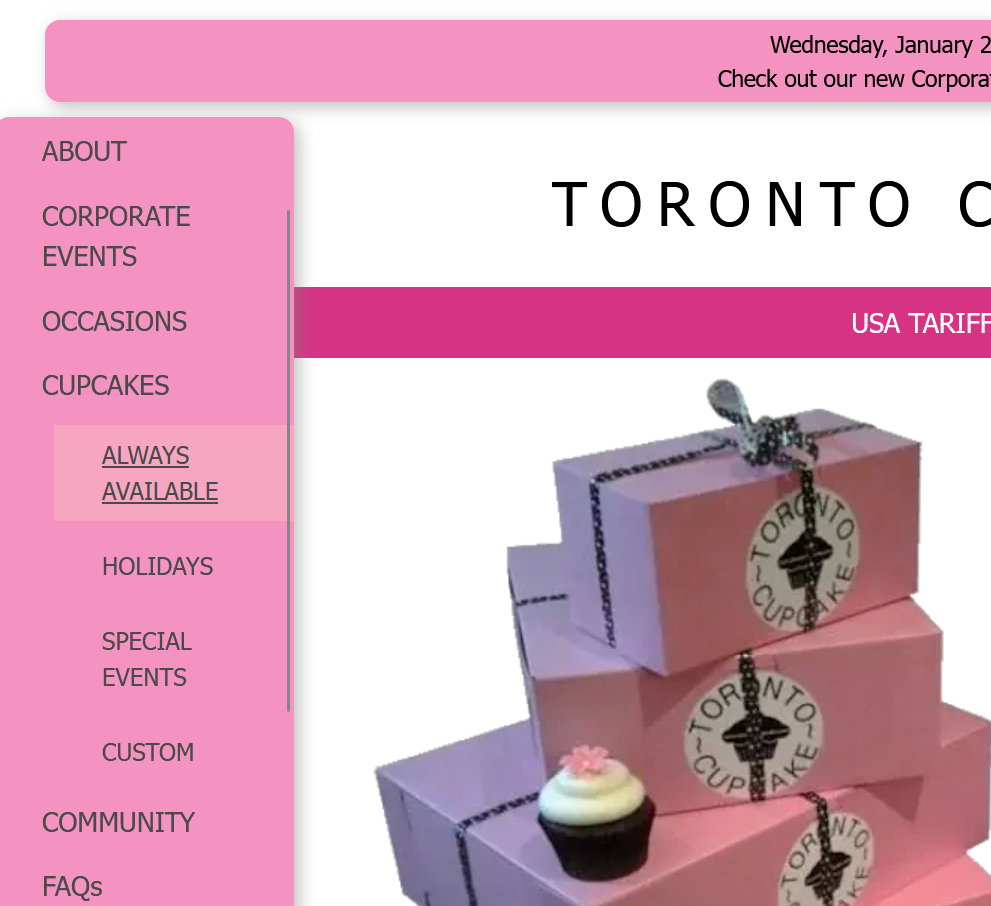
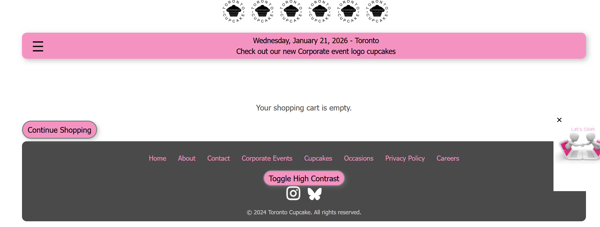
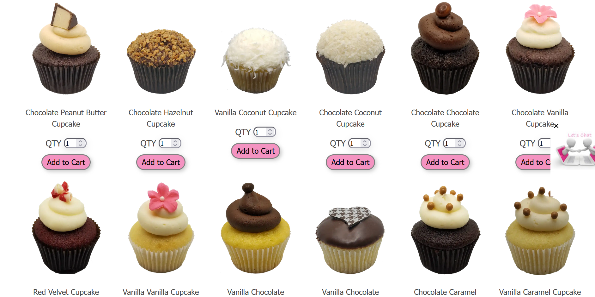
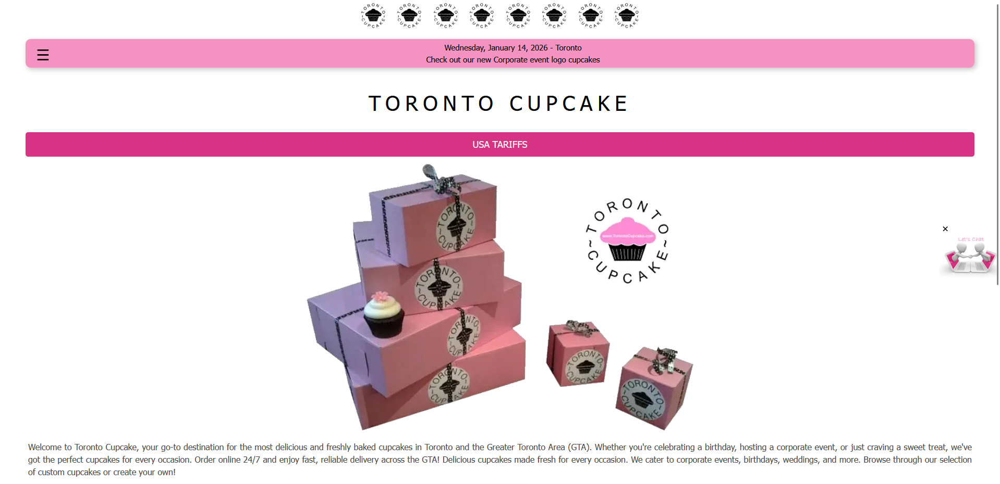
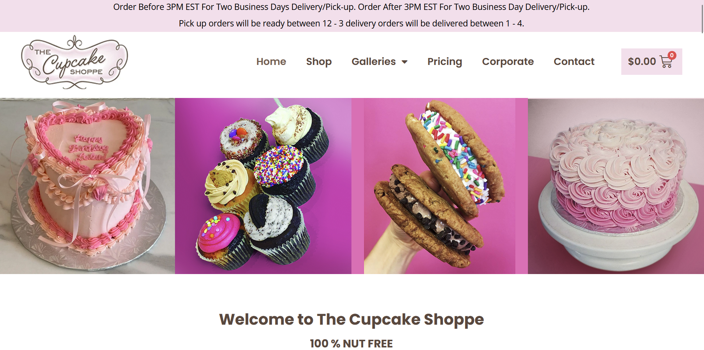

Project Proposal
In the previous article we discussed a user-focused methodology for UI/UX design and the seven useability factors. Now we can use those tools create a design proposal for Toronto Cupcake.
Project Goal
Currently, Toronto Cupcake is an outdated and frustrating website to use that lacks usability, desirability, and credibility.
The business claims to be a gourmet cupcakerie with a focus on community, so the goal of this redesign is to reflect that in the visual brand and experience.
Current Issues
Last week we mentioned a few obvious issues with the site. This week we made those problems more concrete and began to identify their sources.
Navigation
The main menu is hidden from users behind a hamburger menu and is vertical with dropdown options, which is very confusing and hard to look at. The hover states are unprofessional.

Shop/Catalogue
The cart should have a standalone menu button to be accessible from all pages, not hidden at the bottom of the menu.
The cart page itself has a thoughtless layout, negatively impacting it's visual appeal.

To access the catalogue the user must choose from a series of options in the main menu, rather than allowing them to sort the results on a main catalogue page.
It is completely misaligned, lacking important information like price, and all around unprofessional.

Branding
The current design is dated and does not reflect a gourmet bakery. It's pixelated, contains a website link, and is generic.

Accessability
This website does not adhere to accessability standards, especially contrast. It has poor hierarchy and typography which makes it hard for users to read and use.

Changes to Make
We will rebrand Toronto Cupcake to better reflect an elegant, gourmet cupcakerie with a focus on catering. The new brand will include a logo, colour palette, and typography.
The website design will be professional and polished with tasteful animations and hover states, correct alignment, professional icons and photos, and proper hierarchy.
The navigation will follow web standards and be accessible at all times. Menu options will be reduced and made more clear.
The header and footer will be modernized with unnecessary information such has the date removed.
The shop, delivery, and cart functions will be made easier to find and use.
The catalogue will be made much more appealing and understandable with uniform spacing and images, and with the price easily seen.
Redundant content will be removed, such as repeated questions on the FAQ page and the delivery page. The resources and occasions page will be combined for simplicity.
Market Competitors
We chose two market competitors to research. This helps us see what businesses in Toronto Cupcake's niche are doing well and what we can learn from them.
Cupcake Paradise
Cupcake Paradise is a bakery with catering services and a focus on allergen free and custom products.

Their website design, while looking a little AI generated, is trendy, modern, and functional. The animations are tasteful and the colour palette suits their playful brand.
However, the AI graphics could make it appear unprofessional to some users, and a lack of focus on community detracts from its desirability and value. The UI is slightly crowded and the constant animations make it a little annoying.
The Cupcake Shoppe
The Cupcake Shoppe Is a nut free bakery located in Toronto. Their selection is quite large and they also provide catering services.

This website is a little more dated and less trendy than Cupcake Paradise's, but their branding is very elegant and professional. Their UI is very clean and as a result, makes their website look credible.
Some issues with it are the photos being pixelated and lack of community makes a customer less likely to choose them over any other bakery.